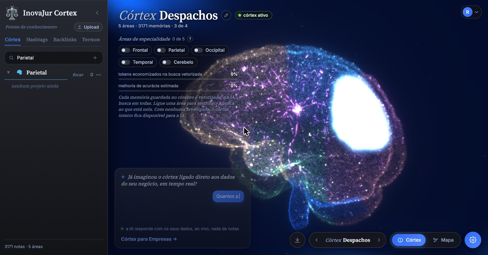

em outros softwares
- pasta lida
- 0 arquivos
- arquivos abertos
- 0
- de ruído
- 0
- links seguidos
- 0
total0 tokens
quanto mais você guarda, mais caro fica perguntar
Profissionais do Direito · órgãos públicos e privados · empresas
Mais funcional que o Obsidian para a aplicação no Direito. Várias IAs, um cérebro otimizado para cada uma delas: claude.ai, Claude Code, ChatGPT, Codex e Gemini.
5 dias grátis, sem cartão: 1 córtex, 3 fontes de conhecimento e 130 memórias.
§ 01 O problema
Ligar a IA às próprias notas costuma virar um projeto de fim de semana, e a conta de tokens cresce junto com o acervo. O Córtex organiza uma vez, quando a memória entra.
§ 02 Como funciona
Conta grátis, em um minuto. Ele já nasce com as áreas de conhecimento, os projetos e o lugar das memórias.
A mesma URL em todas, com o seu token no fim. Sem servidor, sem plugin.
A IA guarda e consulta memórias enquanto você trabalha, e você vê tudo no cérebro, ao vivo.
A URL que você cola na IA
§ 03 No painel
Cada memória guardada aparece no cérebro. Toque nos números para ver o que há em cada parte da tela.

1 / 4
Fig. 02 Painel de um córtex em uso, com cinco áreas.
§ 04 Por dentro
“Quanto ficou o orçamento do lançamento?” De um lado, a IA lê a pasta. Do outro, recebe três trechos.
em outros softwares
total0 tokens
quanto mais você guarda, mais caro fica perguntar
no Córtex
total0 tokens
guardar mais não custa mais
0×
menos leitura por pergunta
Exemplo ilustrativo publicado pelo InovaJur Cortex. Os números mudam com o acervo; a proporção, não.
Os campos vêm uma vez, no cabeçalho. Cada memória é uma linha. A mesma informação, com menos tokens para a IA ler.
−42% de tokens nesta lista de 3 memórias. No índice de um córtex com 48 memórias, −53% (2.776 contra 1.290).
Medido no tokenizador público da OpenAI, em respostas reais do MCP do Córtex.
§ 05 Córtex delimitado
Cada área é uma região do cérebro, até dez. Ligou uma, só ela existe para a IA: busca, leitura e escrita param na fronteira. Experimente.
Córtex de exemplo de um escritório, com 412 memórias. Quantas áreas ficam ligadas ao mesmo tempo depende do plano.
§ 06 Para quem serve
Advocacia, magistratura, Ministério Público, Defensoria e procuradorias: teses, modelos e entendimentos ao alcance da IA.
Normas internas, pareceres, procedimentos e decisões anteriores, consultados pela IA com a fonte ao lado.
Escritórios, cartórios, entidades e associações: o conhecimento da casa deixa de depender de quem lembra.
Contratos, políticas, atas e combinados com clientes. E, no Córtex para Empresas, a IA ligada aos seus sistemas.
Exemplo de uso
Guarde as teses, os modelos e os procedimentos da sua equipe, do órgão ou da empresa. A IA parte deles ao redigir.
Exemplo de uso
Orientações internas, reuniões e combinados com clientes ficam registrados e pesquisáveis.
Integração
Conectado ao Inova.AI, o córtex amplia a base de conhecimento do assistente dentro do PJe. A assinatura do Cortex vem incluída no plano Ultra do Inova.AI.
§ 07 Segurança e LGPD
Nenhum arquivo de usuário é usado ou lido por nós, exceto por solicitação do próprio usuário ou por força judicial.
O tratamento dos dados segue a Lei Geral de Proteção de Dados.
As memórias são arquivos .md de verdade. Você lê, exporta e leva para onde quiser.
A URL do MCP identifica você e pode ser revogada e recriada no painel.
O córtex continua legível e pesquisável. Só para de receber memórias novas.
Devolução do valor em até 7 dias, conforme o art. 49 do Código de Defesa do Consumidor.
§ 08 Planos individuais
Cada cérebro guarda até 5.000 memórias nos planos pagos. Leitura, busca e grafo são sem limite em todos, e nada se perde ao mudar de plano. No anual, o valor sai 12% menor.
Valores de inovajurcortex.com.
Simulador Investimento da equipe
Total estimado
R$ 0,00
Estimativa pelos preços públicos. Não é cobrança nem reserva.
§ 09 Córtex para Empresas
Você pergunta na IA que já usa, e a resposta vem dos seus sistemas, com número, data e fonte. Um desenvolvedor nosso escreve a ponte para o seu caso. Nada muda nos seus sistemas.
E onde os dados estão hoje.
As consultas, os acessos de leitura e as permissões por pessoa.
O que a IA não souber responder é ajustado antes de ir ao ar.
Ninguém instala nada, ninguém troca de ferramenta.
Sem tabela de preço: depende de quantos sistemas entram e de quantas pessoas vão usar.
§ 10 Quem idealizou
Juiz de Direito do TJMA
Cofundador da InovaJur. MBA em Inteligência Artificial para Negócios e especialização em Generative AI for the Legal Profession pela UC Berkeley School of Law. Formador credenciado pela ENFAM e instrutor do TJMA.
Juiz de Direito do TJMA e Juiz Eleitoral do TRE-MA · programador e desenvolvedor
Cofundador da InovaJur. Coordenador do Sistema PJe do TJMA e Coordenador Nacional do PJe+R. Formador credenciado pela ENFAM.
§ 11 Antes de começar
Não. O Córtex vive na nuvem: você cria a conta, copia a URL do MCP e cola na IA. Nada roda na sua máquina, nada precisa ser sincronizado.
Com qualquer uma que fale MCP: claude.ai, Claude Code, ChatGPT, Codex, Gemini, Gemini Spark e Gemini Enterprise já entram com a mesma URL. O córtex é um só: o que uma IA guarda, as outras enxergam.
Cada nota .md que você guarda é uma memória, tanto a que você escreve quanto a que a IA escreve por você pelo MCP. Hashtags, backlinks e o grafo não contam: são só jeitos de olhar as mesmas memórias.
Porque a IA não precisa ler o acervo para achar o contexto. O córtex já sabe o que se liga a quê e entrega a vizinhança certa da pergunta, no tamanho certo. O consumo deixa de crescer com a quantidade de notas.
Não. São arquivos .md de verdade, seus. Você lê, exporta e leva para onde quiser, a qualquer momento.
Nada some. O córtex continua legível, pesquisável e conectado; ele só para de receber memórias novas até você abrir espaço ou subir de plano.
Cinco dias, sem cartão